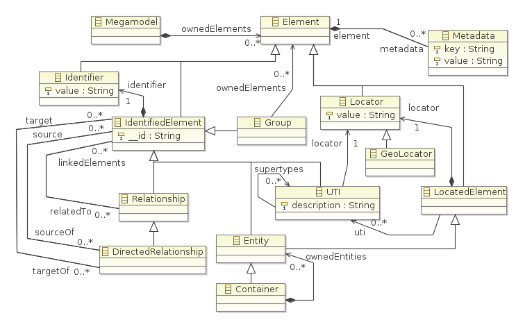

A Metamodel in Model-Driven Engineering defines a Domain Specific Language which a set of types and their relationships concerning a domain. It is then used to check conformity of corresponding domain models.
The Portolan framework includes its own metamodel, named PortolanCore, which can be extended to define an user DSL with visualization abilities:
